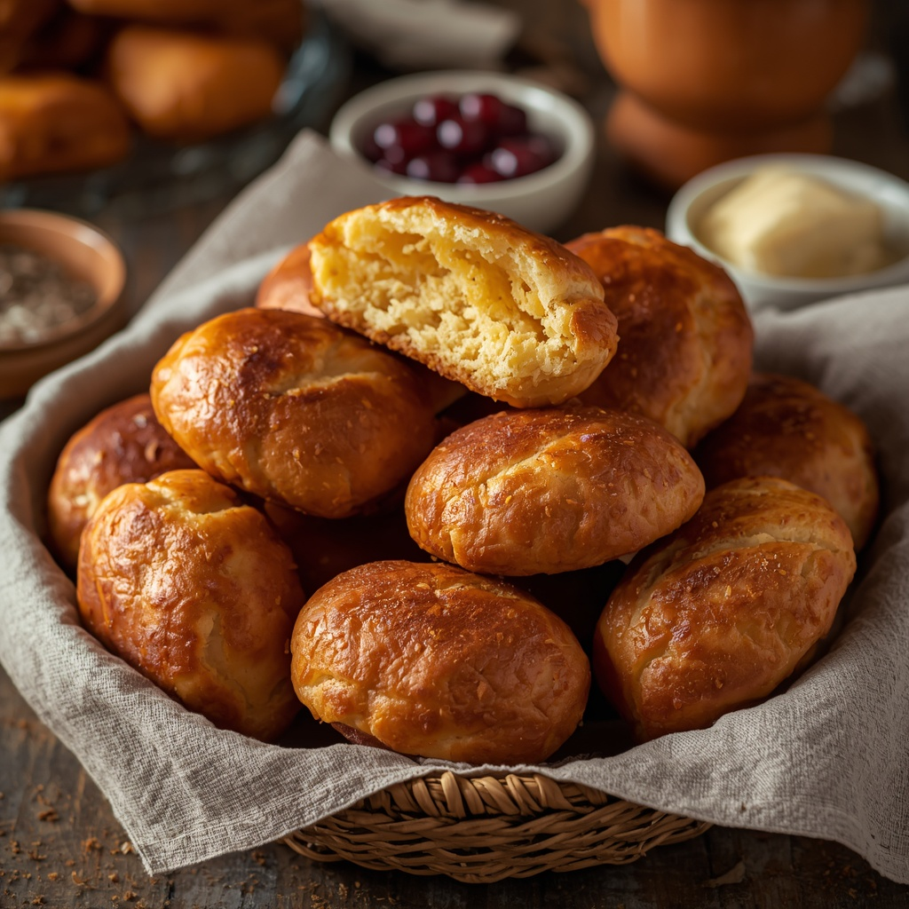

It is safe to assume every single South African eat a fat cake at least once in their lives. They are mostly preferred as a breakfast meal. Below is how you can make them yourself at home.
Dough should be sticky, not firm. If the cakes brown too fast and stay raw inside, lower the heat. Serve plain, with jam or butter, or split and filled with curried mince, polony, or cheese.
This recipe makes about 12 fat cakes. The dough should stay sticky and soft, which is what keeps them fluffy inside.
Home